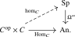

We now specialize the preceding construction to animae. After recording the basic properties of the resulting \(\infty \)-category of spectra, we construct hom spectra and tensoring by spectra, and use these to describe colimit-preserving functors out of \(\Sp \).
Definition 4.4.1. The \(\infty \)-category of spectra \(\Sp \) is defined as the stabilization of the \(\infty \)-category of animae, \[ \Sp \quad := \quad \Sp (\An ). \] Objects of \(\Sp \) are called spectra. Concretely, a spectrum is a sequence of pointed animae \(X_n\) equipped with isomorphisms \[ \sigma _n\colon X_n \iso \Omega (X_{n+1}). \]
By Lemma 4.3.7, a morphism in \(\Sp =\Sp (\An )\) is precisely a sequence of levelwise pointed maps together with homotopies compatible with the structure maps. Thus these are exactly the morphisms introduced in Definition 3.2.2. The following are the central properties governing the behavior of \(\Sp \):
- (1)
-
The \(\infty \)-category \(\Sp \) comes equipped with a left exact functor \(\Omega ^{\infty }\colon \Sp \to \An \). Given a spectrum \(X\), we refer to \(\Omega ^{\infty }(X) = X_0\) as its underlying anima.
- (2)
-
Given a stable \(\infty \)-category \(D\), any left exact functor \(D \to \An \) uniquely lifts to an exact functor \(D \to \Sp \): composition with \(\Omega ^{\infty }\) induces an equivalence: \[ \Omega ^{\infty }\circ - \colon \Fun ^{\ex }(D,\Sp ) \iso \Fun ^{\lex }(D,\An ). \]
- (3)
-
The \(\infty \)-category \(\Sp \) admits small limits (Lemma 4.3.18) and colimits (Lemma 4.3.20).
- (4)
-
The functors \(\Omega ^{\infty }\colon \Sp \to \An \) and \(\Omega ^{\infty }\colon \Sp \to \An _*\) admit left adjoints \[ \Sigma ^{\infty } \colon \An _* \to \Sp \qquad \qquadtext { and } \qquad \Sigma ^{\infty }_+ \colon \An \to \Sp \] satisfying \(\Sigma ^{\infty }_+(X) \cong \Sigma ^{\infty }(X_+)\) (Lemma 4.3.22 and Corollary 4.3.23).
Given a pointed anima \(X\), we refer to the spectrum \(\Sigma ^{\infty }(X)\) as the reduced suspension spectrum of \(X\). For unpointed \(X\), we call \(\Sigma ^{\infty }_+(X)\) the unreduced suspension spectrum of \(X\).
Definition 4.4.2 (Sphere spectrum). We define the sphere spectrum as \(\S := \Sigma ^{\infty }(S^0) \simeq \Sigma ^{\infty }_+(*) \in \Sp \).
For an anima \(X\), we will frequently use the alternative notation \[ \S [X] \quad := \quad \Sigma ^{\infty }_+(X) \] for the unreduced suspension spectrum. We wish to think of the spectrum \(\S [X]\) as the ‘free spectrum generated by \(X\)’. This notation mimics the notation for the free abelian group \(\Z [S]\) generated by a set \(S\), characterized by the property that group homomorphisms \(\Z [S] \to A\) correspond to maps of sets \(S \to A\).
Table 4.1 collects the resulting analogies between ordinary algebra and ‘higher algebra’. Ordinary algebra Higher algebra Set Anima Abelian group Spectrum Integers \(\Z\) Sphere spectrum \(\S\) Underlying set Underlying anima \(\Omega^{\infty}(X)\) Free abelian group \(\Z[S]\) Unreduced suspension spectrum \(\S[X]\)
Remark 4.4.3. Given a pointed anima \((X,x) \in \An _*\), note that we may write \(X\) as the cofiber of the basepoint inclusion \(*_+ \to X_+\). Since \(\Sigma ^{\infty }(-)\) preserves cofibers, we may write the reduced suspension spectrum of \(X\) as \[ \Sigma ^{\infty }(X,x) \quad \simeq \quad \cofib (\S \xrightarrow {x} \S [X]). \]
4.4.1 Hom spectra
Given an abelian category \(\Aa \), the hom sets \(\Hom _{\Aa }(A,B)\) can be equipped with a canonical abelian group structure, where the sum \(f + g\) of two morphisms \(f,g\colon A \to B\) is given by the composite \[ A \xrightarrow {\Delta } A \oplus A \xrightarrow {f \oplus g} B \oplus B \xrightarrow {\nabla } B. \] In an analogous way, the hom animae \(\Hom _C(X,Y)\) in a stable \(\infty \)-category \(C\) can be canonically lifted to spectra:
Proposition 4.4.4. For a stable \(\infty \)-category \(C\), there exists a unique functor \[ \hom _C(-,-)\colon C\catop \times C \to \Sp \] that is exact in both variables and fits in a commutative triangle as follows:

Proof. Consider the Yoneda embedding \[ C \, \hookrightarrow \, \Fun (C\catop ,\An ), \qquad Y \, \mapsto \, \Hom _C(-,Y). \] This lands in left exact functors, so by the equivalence \(\Fun ^{\ex }(C\catop ,\Sp ) \iso \Fun ^{\lex }(C\catop ,\An )\) we may uniquely lift it to a (fully faithful) functor \[ C \, \hookrightarrow \, \Fun ^{\ex }(C\catop , \Sp ), \qquad Y \, \mapsto \, \hom _C(-,Y). \] The resulting functor \(\hom _C\colon C\catop \times C \to \Sp \) is exact in the first variable by construction. It remains to show it is also exact in the second variable: for fixed \(X\), we need to show that the functor \(\hom _C(X,-)\colon C \to \Sp \) is exact. It suffices to check this after composing with the functors \((-)_n\colon \Sp \to \An \), which are left exact and jointly conservative. Since we have \(\hom _C(X,Y)_n \simeq \hom _C(X[-n],Y)_0 \simeq \Hom _C(X[-n],Y)\), this follows from the left exactness of \(\Hom _C(X[-n],-)\colon \Sp \to \An \). □
Terminology 4.4.5. We refer to the spectra \(\hom _C(X,Y)\) as the hom spectra or mapping spectra of \(C\).
We explicitly record the following observation made in the proof of the proposition:
Corollary 4.4.6 (Stable Yoneda lemma). For a stable \(\infty \)-category \(C\), the functor \[ C \,\to \,\Fun (C\catop ,\Sp ), \qquad Y \, \mapsto \, \hom _C(-,Y) \] is fully faithful. □
Exercise 4.4.7. Show that for \(C = \Sp \), the Hom spectrum \(\hom (X,Y) := \hom _{\Sp }(X,Y)\) may be explicitly described at level \(n\) by \[ \hom (X,Y)_n \quad \simeq \quad \Hom _{\Sp }(X,Y[n]). \]
Proof. It suffices to show that these two functors agree after applying \(\Omega ^{\infty }\), and indeed we have \[ \Omega ^{\infty }\hom (\S ,-) \cong \Hom _{\Sp }(\S ,-) \cong \Hom _{\Sp }(\S [*],-) \cong \Hom _{\An }(*,\Omega ^{\infty }(-)) \cong \Omega ^{\infty }(-). \] Here we use that \(\Hom _{\An }(*,-)\colon \An \to \An \) is equivalent to the identity, since its left adjoint \(- \times *\colon \An \to \An \) is equivalent to the identity. □
We will use the standard presentation from Corollary 4.3.30 in the following form: if \(X\) is a spectrum with levels \(X_n=\Omega ^{\infty -n}X\), then \[ X \simeq \colim _{n \geq 0}\Sigma ^{\infty -n}X_n. \] Together with Remark 4.4.3, this says that every spectrum can be built from unreduced suspension spectra using shifts, cofibers and colimits.
4.4.2 The universal property of spectra
The \(\infty \)-category of spectra is defined via a universal property for left exact functors into it. We will now prove another universal property in terms of functors out of it: colimit-preserving functors \(\Sp \to C\) into a cocomplete stable \(\infty \)-category \(C\) are uniquely determined by their value on the sphere spectrum.
Proposition 4.4.9 (Tensoring by spectra). Let \(C\) be a stable \(\infty \)-category with small colimits. Then \(C\) is tensored over \(\Sp \): there exists a unique functor \[ - \otimes - \colon \Sp \times C \to C \] equipped with a natural equivalence of spectra \[ \hom _C(X \otimes Y, Z) \quad \cong \quad \hom _{\Sp }(X, \hom _C(Y,Z)) \] for \(X \in \Sp \) and \(Y,Z \in C\).
Proof. The uniqueness of \(X \otimes Y\) is clear from the stable Yoneda lemma, Corollary 4.4.6. For existence, we need to show that for every \(Y \in C\) the functor \[ \Phi \colon \Sp \catop \to \Fun (C,\Sp ), \qquad \Phi (X) := \hom _{\Sp }(X,\hom _C(Y,-)) \] lands in the full subcategory \(C\catop \hookrightarrow \Fun (C,\Sp )\) of corepresentable functors, i.e. functors of the form \(\hom _C(W,-)\) for some \(W \in C\).
Step 1: We first show that \(\Phi (X)\) is corepresentable whenever \(X = \S [X']\) is an unreduced suspension spectrum for some anima \(X' \in \An \). To this end, recall from Theorem 1.8.9 that evaluation at \(*\) induces an equivalence \[ \Fun ^{\colim }(\An , C) \quad \iso \quad C. \] We let \(- \otimes Y\colon \An \to C\) denote the unique colimit-preserving functor satisfying \(* \otimes Y \cong Y\). We then claim that there exists a natural isomorphism \[ \Phi (\S [X']) \quad \cong \quad \hom _C(X' \otimes Y, -) \] of functors \(C \to \Sp \) for every \(X' \in \An \). For this, note that both sides define colimit-preserving functors \(\An \to \Fun (C,\Sp )\catop \) by varying \(X'\). Indeed, on either side a colimit in \(X'\) becomes a limit in \(\Fun (C,\Sp )\), because the relevant mapping-spectrum functor is contravariant in the variable determined by \(X'\); this is precisely a colimit after passing to \(\Fun (C,\Sp )\catop \). It therefore suffices to produce an isomorphism for \(X'= *\). And indeed, in that case both sides evaluate to \(\hom _C(Y,-)\) by Lemma 4.4.8 and the given isomorphism \(* \otimes Y \cong Y\).
Step 2: We now show the claim for an arbitrary spectrum \(X\). Observe that the functor \(\Phi \) is exact and sends colimits of spectra to limits in the functor category. Also observe that the corepresentable functors in \(\Fun (C,\Sp )\) are closed under limits and shifts. It thus remains to show that every spectrum \(X\) can be built from unreduced suspension spectra using shifts, cofibers and colimits. By Corollary 4.3.30, every spectrum is a colimit of shifts of reduced suspension spectra. Moreover, Remark 4.4.3 writes every reduced suspension spectrum \(\Sigma ^{\infty }(Z,z)\) as the cofiber of a map \(\S \to \S [Z]\) between unreduced suspension spectra. □
Corollary 4.4.10. Let \(C\) be a stable \(\infty \)-category with small colimits. For every object \(Y \in C\), the functor \(\hom _C(Y,-)\colon C \to \Sp \) admits a left adjoint \[ - \otimes Y\colon \Sp \to C. \]
Proof. Applying \(\Omega ^{\infty }\) to the natural isomorphism from Proposition 4.4.9 provides the adjunction equivalence \[ \Hom _C(X \otimes Y, Z) \quad \cong \quad \Hom _{\Sp }(X, \hom _C(Y,Z)) \] for \(X \in \Sp \) and \(Z \in C\). □
Fixing some stable \(\infty \)-category \(C\) with small colimits, let us now establish various basic properties of tensoring on \(C\).
Lemma 4.4.11. The functor \(- \otimes -\colon \Sp \times C \to C\) preserves colimits in both variables.
Proof. By the Yoneda lemma, it suffices to show that \(\Hom _{C}(- \otimes -,Z)\colon \Sp \catop \times C\catop \to \An \) preserves limits in both variables, for all \(Z \in C\). This functor is naturally isomorphic to \(\Hom _{\Sp }(-,\hom _{C}(-,Z))\). This clearly preserves limits in the first variable. For the second variable, this follows from the fact that \(\Omega ^{\infty }\hom _C(-,Z) = \Hom _C(-,Z)\colon C\catop \to \An \) preserves limits. □
Proof. For objects \(Y,Z \in C\), there are natural isomorphisms \[ \hom _C(Y,Z) \overset {\HCode {<span class="source-reference" data-label="lem:Map_Out_Of_Sphere_Spectrum">Lemma 4.4.8</span>}}{\cong } \hom _{\Sp }(\S , \hom _C(Y,Z)) \cong \hom _C(\S \otimes Y, Z), \] hence by the stable Yoneda lemma we obtain a natural isomorphism \(\S \otimes Y \cong Y\). □
Lemma 4.4.13. For a colimit-preserving functor \(F\colon \Sp \to C\), there exists a natural isomorphism \[ F(-) \, \cong \, - \otimes F(\S ). \] Moreover, this natural isomorphism can be chosen naturally in \(F \in \Fun ^{\colim }(\Sp ,C)\).
Proof. We first produce a natural isomorphism \(F(\S [-]) \cong \S [-] \otimes F(\S )\) of functors \(\An \to C\). In light of the equivalence \(\ev _*\colon \Fun ^{\colim }(\An ,C) \iso C\), it suffices to produce an isomorphism \(F(\S ) \cong \S \otimes F(\S )\), for which we take the one from Lemma 4.4.12.
Now, for computing \(F\) on an arbitrary spectrum \(X\), we use the standard presentation from Corollary 4.3.30. Using that \(F\) preserves colimits and shifts, we then get \[ F(X) \simeq F(\colim _n \Sigma ^{\infty -n} X_n) \simeq \colim _n \Omega ^n F( \Sigma ^{\infty } X_n) \simeq \colim _n \Omega ^n \cofib (F(\S ) \to F(\S [X_n])), \] where the last equivalence uses \(\Sigma ^{\infty }X_n \simeq \cofib (\S \to \S [X_n])\). Applying the same reasoning to \(F' = - \otimes F(\S )\), we similarly obtain \[ X \otimes F(\S ) \simeq \colim _n \Omega ^n \cofib (F(\S ) \to \S [X_n] \otimes F(\S )). \] The claim now follows from the identification \(F(\S [X_n]) \cong \S [X_n] \otimes F(\S )\) established before. These equivalences are natural in both \(F\) and \(X\): the standard presentation is natural in \(X\), while the initial identification of colimit-preserving functors \(\An \to C\) is natural in \(F\). We therefore obtain the claimed natural isomorphism in \(\Fun ^{\colim }(\Sp ,C)\). □
Theorem 4.4.14 (Universality of \(\Sp \)). Let \(C\) be a stable \(\infty \)-category with small colimits. Then evaluation at the sphere spectrum induces an equivalence \[ \ev _{\S } \colon \Fun ^{\colim }(\Sp ,C) \quad \iso \quad C. \]
Proof. We claim that an inverse is given by the tensor product functor \[ C \, \to \, \Fun ^{\colim }(\Sp ,C), \qquad \qquad X \, \mapsto \, - \otimes X. \] A natural isomorphism \(\S \otimes X \cong X\) is provided by Lemma 4.4.12. A natural isomorphism \(F \cong - \otimes F(\S )\) is provided by Lemma 4.4.13. □
We may summarize this result by saying that \(\Sp \) is the free cocomplete stable \(\infty \)-category generated by \(\S \).
Corollary 4.4.15. Let \(C\) be a stable \(\infty \)-category with small colimits. Then every colimit-preserving functor \(F\colon \Sp \to C\) admits a right adjoint \(F^R\colon C \to \Sp \).
Proof. By Theorem 4.4.14, \(F\) is of the form \(- \otimes X\) for some \(X \in C\), hence has right adjoint given by the mapping spectrum functor \(\hom _C(X,-)\colon C \to \Sp \). □
4.4.3 Tensor products of spectra
Given two abelian groups \(A\) and \(B\), we may form their tensor product \(A \otimes B\), which is characterized by the property that group homomorphisms \(A \otimes B \to C\) correspond to bilinear maps \(A \times B \to C\), or equivalently to morphisms of abelian groups \(A \to \Hom _{\Ab }(B,C)\). We will now construct a tensor product of spectra with analogous properties.
Proposition 4.4.16. There exists a unique tensor product functor \[ - \otimes -\colon \Sp \times \Sp \to \Sp \] which preserves colimits in both variables and satisfies \(\S \otimes \S \cong \S \).
Proof. Currying and two applications of Theorem 4.4.14 give equivalences \[ \Fun ^{\colim ,\colim }(\Sp \times \Sp ,\Sp ) \simeq \Fun ^{\colim }(\Sp ,\Fun ^{\colim }(\Sp ,\Sp )) \simeq \Fun ^{\colim }(\Sp ,\Sp ) \simeq \Sp , \] where the intermediate functor category is stable and admits small colimits computed pointwise. Under this equivalence, a functor is sent to its value on \((\S ,\S )\). The sphere spectrum therefore determines the required functor uniquely. □
Let us now establish various basic properties of the tensor product.
Lemma 4.4.17. For spectra \(X,Y,Z \in \Sp \), there are natural isomorphisms of spectra \[ \S \otimes X \cong X \cong X \otimes \S , \qquad X \otimes Y \cong Y \otimes X \qquad (X \otimes Y) \otimes Z \cong X \otimes (Y \otimes Z) \] and \[ \hom (Y,\hom (X,Z)) \cong \hom (X \otimes Y, Z) \cong \hom (X,\hom (Y,Z)). \]
Proof. For the first row, each of these expressions define functors that are colimit-preserving in each of their arguments. By Theorem 4.4.14, it thus suffices to produce such isomorphisms after evaluation at the sphere spectrum, where they are immediate consequences of the isomorphism \(\S \otimes \S \cong \S \).
For the second row, we may fix \(Z\) and regard these expressions as functors \(\Sp \catop \times \Sp \catop \to \Sp \) that preserve limits in both variables, or equivalently as functors \(\Sp \times \Sp \to \Sp \catop \) preserving colimits in both variables. It then again suffices to prove they are isomorphic after setting \(X = Y = \S \), which follows from the natural isomorphism \(\hom (\S ,Z) \cong Z\) from Lemma 4.4.8. □
Lemma 4.4.18. There exists a natural isomorphism \[ \S [X] \otimes \S [Y] \quad \cong \quad \S [X \times Y] \] for all \(X,Y \in \An \).
Proof. Both of the functors \(\S [-] \otimes \S [-], \S [- \times -]\colon \An \times \An \to \Sp \) preserve colimits in both variables, hence they are naturally isomorphic if and only if they agree on \((*,*)\), see Corollary 1.8.10. But on \((*,*)\) both sides evaluate to \(\S \otimes \S \simeq \S \). □
Lemma 4.4.19. There exists a natural isomorphism \[ \Sigma ^{\infty }(X) \otimes \Sigma ^{\infty }(Y) \quad \cong \quad \Sigma ^{\infty }(X \wedge Y) \] for all \(X,Y \in \An _*\).
Proof. Since \(- \otimes -\) preserves cofibers in each variable, this follows by combining the previous lemma with the expression \(\Sigma ^{\infty }(Z) \simeq \cofib (\S \to \S [Z])\) from Remark 4.4.3 and the isomorphism \(X_+ \wedge Y_+ \cong (X \times Y)_+\) from Lemma 2.4.16. □
Remark 4.4.20. Let \(X\) and \(Y\) be spectra. The standard presentations of \(X\) and \(Y\) provide the following description of their tensor product: \[ X \otimes Y \quad \cong \quad \colim _n \colim _m (\Sigma ^{\infty -n} X_n \otimes \Sigma ^{\infty - m} Y_m) \quad \simeq \quad \colim _n \colim _m \Sigma ^{\infty - n - m} (X_n \wedge Y_m), \] where the last equivalence holds by the previous lemma. However, this formula should be used with care: it makes implicit use of the additivity of the shift functors \(X[-n][-m] \cong X[-(n+m)]\) from Warning 4.2.11. To avoid introducing sign errors, we will not work with this formula for the tensor product.
4.4.4 Homotopy groups
Important invariants of spectra are their homotopy groups:
Definition 4.4.21. For a spectrum \(X\) and an integer \(k\), we define its \(k\)-th homotopy group \(\pi _k(X) \in \Ab \) as \[ \pi _k(X) := [\S [k],X] := \pi _0\Hom _{\Sp }(\S [k],X). \] The assignment \(X \mapsto \pi _k(X)\) defines a functor \(\pi _*\colon \Sp \to \Ab \).
Exercise 4.4.22. Show that we have \(\pi _{k}(X[n]) \simeq \pi _{k-n}(X)\) for all \(k,n \in \Z \).
Exercise 4.4.23. Show that for \(n \geq 0\) and \(k + n \geq 0\) we have \(\pi _k(X) \cong \pi _{n+k}(X_n)\). In particular we have \(\pi _k(X) = \pi _k(\Omega ^{\infty }X)\) for \(k \geq 0\).
Example 4.4.24. For a pointed anima \(X\), the negative homotopy groups of its suspension spectrum \(\Sigma ^{\infty }X\) vanish. For \(k \geq 0\), Remark 4.3.27 gives \[ \pi _k(\Sigma ^{\infty }(X)) \; \cong \; \pi _k(\Omega ^{\infty } \Sigma ^{\infty }(X)) \; \cong \; \colim _{n \geq 0} \pi _k(\Omega ^n \Sigma ^nX) = \colim _n \pi _{n+ k}(\Sigma ^n X). \] These groups are known as the stable homotopy groups of \(X\). By the classical Freudenthal suspension theorem [Freudenthal (1937)] the maps \(\pi _{n+k}(\Sigma ^nX) \to \pi _{n+k+1}(\Sigma ^{n+1}X)\) are isomorphisms for \(n \geq k+2\).
Example 4.4.25. By Remark 2.4.20, there is an isomorphism \(\deg \colon \pi _n(S^n) \xrightarrow {\cong } \Z \) for every \(n\geq 1\), and the suspension maps correspond to the identity of \(\Z \). It follows that there is an isomorphism \(\pi _0(\S ) \cong \colim _n \pi _n(S^n) \cong \Z \).
Corollary 4.4.26. The functors \(\pi _k\colon \Sp \to \Ab \) for \(k \in \Z \) are jointly conservative: a morphism of spectra \(f\colon X \to Y\) is an isomorphism if and only if the induced map \(\pi _k(f) \colon \pi _k(X) \to \pi _k(Y)\) is an isomorphism.
Proof. By Lemma 4.3.6, \(f\) is an isomorphism if and only if each map \(f_n\colon X_n \to Y_n\) of animae is an isomorphism. By the Whitehead Theorem for animae, Proposition 2.4.22, this is the case if \(f_n\) induces isomorphisms on all homotopy groups. By Exercise 4.4.23 this condition is equivalent to the condition that \(f\) induces isomorphisms on all homotopy groups. □
Lemma 4.4.27. For every \(k \in \Z \), the functor \(\pi _k\colon \Sp \to \Ab \) preserves filtered colimits.
Proof. By Lemma 4.3.21, a filtered colimit of spectra is computed levelwise. The claim then follows from Exercise 4.4.23 together with the fact that the homotopy groups of pointed animae preserve filtered colimits. □
Lemma 4.4.28. For every \(k \in \Z \), the functor \(\pi _k\colon \Sp \to \Ab \) preserves arbitrary coproducts.
Proof. Finite coproducts in \(\Sp \) agree with finite products, and \(\pi _k\) preserves both of these. Since an arbitrary coproduct is the filtered colimit of its finite subcoproducts, the claim follows from Lemma 4.4.27. □
Proposition 4.4.29 (Long exact sequence of homotopy groups). Let \(X \xrightarrow {f} Y \xrightarrow {g} Z\) be an exact sequence of spectra. Then there is a long exact sequence of homotopy groups of the form \[ \dots \xrightarrow {} \pi _{1}(Y) \xrightarrow {g_*} \pi _{1}(Z) \to \pi _0(X) \xrightarrow {f_*} \pi _0(Y) \xrightarrow {g_*} \pi _0(Z) \to \pi _{-1}(X) \xrightarrow {f_*} \pi _{-1}(Y) \xrightarrow {} \dots . \]
Proof. Since every exact sequence of spectra \(X \xrightarrow {f} Y \xrightarrow {g} Z\) leads to two new exact sequences \[ Z[-1] \to X \xrightarrow {f} Y \qquadtext { and } Y \xrightarrow {g} Z \to X[1], \] it inductively suffices to prove that the sequence \(\pi _0(X) \xrightarrow {f} \pi _0(Y) \xrightarrow {g} \pi _0(Z)\) is exact. It is clear that the composite is the zero map. Conversely, consider a class \([\sigma ] \in \pi _0(Y)\), represented by a morphism of spectra \(\sigma \colon \S \to Y\), and assume that the class \([g \circ \sigma ] \in \pi _0(Z)\) is zero. Then \(\sigma \colon \S \to Y\) factors through the fiber \(X\) of \(g\colon Y \to Z\), and hence is of the form \(f \circ \tau \) for some \(\tau \colon \S \to X\). It follows that \([\sigma ]\) is in the image of \(f\colon \pi _0(X) \to \pi _0(Y)\), as desired. □
4.4.5 Homology theories represented by spectra
In Chapter 3, a spectrum \(E\) directly gave a cohomology theory by mapping into its individual pointed animae \(E_k\). We now have the additional structure needed to associate a homology theory to \(E\) as well.
Definition 4.4.30 (\(E\)-homology). Let \(E\) be a spectrum and let \(X \in \An _*\) be a pointed anima. For \(k\in \Z \), we define the reduced \(E\)-homology of \(X\) by \[ \widetilde E_k(X):=\pi _k(\Sigma ^{\infty }X\otimes E). \]
Proposition 4.4.31. For every spectrum \(E\), the functors \(\widetilde E_*\) admit natural suspension isomorphisms that make them into a reduced homology theory in the sense of Definition 3.1.2.
Proof. The natural isomorphism \(\Sigma ^{\infty }(\Sigma X)\cong (\Sigma ^{\infty }X)[1]\) gives suspension isomorphisms \[ \widetilde E_{k+1}(\Sigma X)=\pi _{k+1}((\Sigma ^{\infty }X\otimes E)[1])\cong \pi _k(\Sigma ^{\infty }X\otimes E)=\widetilde E_k(X). \] Both \(\Sigma ^{\infty }\) and \(-\otimes E\) preserve cofiber sequences. Exactness therefore follows from the long exact sequence of homotopy groups in Proposition 4.4.29.
It remains to verify the wedge axiom. The functor \(\Sigma ^{\infty }(-)\otimes E\) preserves coproducts, and each \(\pi _k\colon \Sp \to \Ab \) preserves coproducts by Lemma 4.4.28. Thus \[ \bigoplus _{i\in I}\widetilde E_k(X_i)\xrightarrow {\cong }\widetilde E_k\left (\bigvee _{i\in I}X_i\right ), \] as required. □
Remark 4.4.32 (Comparison with the earlier definition). The cohomology theory associated to \(E\) in Definition 3.2.3 can now be expressed in terms of the mapping spectrum. Indeed, the adjunction \(\Sigma ^{\infty }\dashv \Omega ^{\infty }\) gives \begin {align*} \pi _{-k}\hom (\Sigma ^{\infty }X,E) &\cong [\Sigma ^{\infty }X[-k],E] \\ &\cong [\Sigma ^{\infty }X,E[k]] \\ &\cong [X,\Omega ^{\infty }(E[k])]_* \\ &\cong [X,E_k]_* = \widetilde E^k(X). \end {align*}
Here the last isomorphism uses the spectrum structure maps for \(k\geq 0\) and the convention \(E_k=\Omega ^{-k}E_0\) for \(k<0\). All displayed isomorphisms are isomorphisms of abelian groups: under \(\Omega ^{\infty }(E[k])\simeq E_k\), the canonical infinite-loop group structure agrees with the double-loop group structure used in Definition 3.2.3.
4.4.6 Mapping telescopes and the Milnor sequence
We record a general formula for sequential colimits in stable \(\infty \)-categories, an abstract form of the classical mapping telescope which will let us later resolve a spectrum by direct sums of spheres. By duality this provides a description of an inverse limit, giving us the Milnor sequence.
Lemma 4.4.33 (Mapping telescope). Let \(C\) be a stable \(\infty \)-category with countable coproducts, and let \(Y_0 \xrightarrow {f_0} Y_1 \xrightarrow {f_1} Y_2 \to \dots \) be a sequential diagram in \(C\). Write \(\iota _k\colon Y_k \to \bigoplus _{j \geq 0} Y_j\) for the inclusion of the \(k\)-th summand. Then there is an exact sequence \[ \bigoplus _{k \geq 0} Y_k \xrightarrow {\ \id - f\ } \bigoplus _{k \geq 0} Y_k \longrightarrow \colim _k Y_k, \] where \(\id - f\) restricts on the \(k\)-th summand to the difference \(\iota _k - \iota _{k+1} \circ f_k\).
Proof. By Lemma 2.4.29, the colimit \(\colim _kY_k\) is the pushout of the two maps from \(\bigoplus _kY_k\) to the coproducts of the even and odd terms. In a stable \(\infty \)-category, the pushout of a span \(B \xleftarrow {a} A \xrightarrow {b} C\) is the cofiber of \[ (a,-b)\colon A \longrightarrow B \oplus C. \] After identifying the coproduct of the even and odd terms with \(\bigoplus _k Y_k\) and changing the signs on the odd source summands, this map is precisely \(\id -f\). □
Corollary 4.4.34 (Dual mapping telescope). Let \(C\) be a stable \(\infty \)-category with countable products. For every tower \[ \dots \xrightarrow {f_2} Y_2 \xrightarrow {f_1} Y_1 \xrightarrow {f_0} Y_0 \] in \(C\), there is an exact sequence \[ \lim _k Y_k \longrightarrow \prod _{k \geq 0}Y_k \xrightarrow {\ \id -f\ } \prod _{k \geq 0}Y_k, \] where the \(k\)-th component of \((\id -f)(y)\) is \(y_k-f_k(y_{k+1})\).
Proof. Apply Lemma 4.4.33 in the opposite stable \(\infty \)-category \(C\catop \). □
To state the resulting short exact sequence, we first introduce the one derived-limit construction that we need.
Definition 4.4.35 (First derived limit). Let \(\dots \xrightarrow {f_2} A_2 \xrightarrow {f_1} A_1 \xrightarrow {f_0} A_0\) be a tower of abelian groups. Define a homomorphism \[ d\colon \prod _{k \geq 0}A_k \longrightarrow \prod _{k \geq 0}A_k, \qquad d(a)_k := a_k-f_k(a_{k+1}). \] The first derived limit of the tower is the abelian group \[ \lim _k^1 A_k := \coker (d). \] Notice that the ordinary inverse limit \(\lim _k A_k\) is the kernel of \(d\).
Corollary 4.4.36 (Milnor sequence). For every tower \(\dots \to Y_2 \to Y_1 \to Y_0\) of spectra and every \(n \in \Z \), there is a natural short exact sequence \[ 0 \longrightarrow \lim _k^1 \pi _{n+1}(Y_k) \longrightarrow \pi _n\big (\lim _k Y_k\big ) \longrightarrow \lim _k \pi _n(Y_k) \longrightarrow 0. \]
Proof. Homotopy groups commute with products of spectra: indeed, the mapping anima functor \(\Hom _{\Sp }(\S [n],-)\) preserves limits, and \(\pi _0\) preserves products of animae. Consequently, applying the long exact sequence of Proposition 4.4.29 to the fiber sequence of Corollary 4.4.34 gives an exact sequence \[ \prod _k \pi _{n+1}(Y_k) \xrightarrow {\ d\ } \prod _k \pi _{n+1}(Y_k) \longrightarrow \pi _n\big (\lim _kY_k\big ) \longrightarrow \prod _k \pi _n(Y_k) \xrightarrow {\ d\ } \prod _k \pi _n(Y_k). \] The claim follows by identifying the cokernel of the first map and the kernel of the last map using Definition 4.4.35. □
Exercises
Exercise 4.1. Let \(C\) and \(D\) be \(\infty \)-categories with finite limits. Show that there is an equivalence \[ \Sp (C \times D) \iso \Sp (C) \times \Sp (D). \]
Exercise 4.2. Let \(C\) be a semiadditive \(\infty \)-category.
- (1)
-
Show that for all objects \(X\) and \(Y\) in \(C\) the set \([X,Y] := \pi _0\Hom _C(X,Y)\) of homotopy classes of morphisms from \(X\) to \(Y\) admits a canonical structure of an abelian monoid, where addition of \(f,g \in [X,Y]\) is given by the composite \[ f + g \colon \quad X \xrightarrow {\Delta } X \oplus X \xrightarrow {f \oplus g} Y \oplus Y \xrightarrow {\nabla } Y. \]
- (2)
-
Show that for all morphisms \(f\colon X' \to X\) and \(g\colon Y \to Y'\) in \(C\) the composition maps \[ - \circ f\colon [X,Y] \to [X',Y] \qquadtext {and} g \circ - \colon [X,Y] \to [X,Y'] \] are homomorphisms of abelian monoids.
- (3)
-
Let \(M\) be an abelian monoid. Show that \(M\) is an abelian group if and only if the map \[ \begin {pmatrix} 1 & 1 \\ 0 & 1 \end {pmatrix}\colon M \oplus M \to M \oplus M, \qquad (x,y) \mapsto (x,x+ y) \] is a bijection of sets.
- (4)
-
Conclude that the semiadditive \(\infty \)-category \(C\) is in fact additive if and only if the abelian monoid \([X,Y]\) is an abelian group for all \(X\) and \(Y\).
Exercise 4.3. Let \(C\) be a pointed \(\infty \)-category with finite limits.
- (1)
-
Show that for every object \(X\), the loop space \(\Omega X\) admits the structure of a group object in the homotopy category \(\Ho (C)\): there are maps \[ e\colon * \to \Omega X, \qquad m\colon \Omega X \times \Omega X \to \Omega X, \qquadtext { and } i\colon \Omega X \to \Omega X \] that satisfy the usual group relations up to homotopy.
- (2)
-
Show that for objects \(X\) and \(Y\) in \(C\), the set \([X,\Omega Y]\) is canonically a group. Show that \([X,\Omega ^2Y]\) is an abelian group.
- (3)
-
Deduce that when \(C\) is stable, the Hom-set \([X,Y]\) in \(\Ho (C)\) is an abelian group for all \(X\) and \(Y\), and that composition in \(C\) defines group homomorphisms.
- (4)
-
Show that the resulting abelian group structure on \([X,Y]\) agrees with the one defined in Chapterexercise 4.2.
Remark 4.4.37. Applying the previous exercise to \(C\catop \), we deduce that for every \(X\) the suspension \(\Sigma X\) is a cogroup object in \(\Ho (C)\), and hence that \([\Sigma X, Y]\) admits an abelian group structure for all \(Y\).
Remark 4.4.38. In Chapter 5, we will upgrade the group structure of \(\Omega X\) in \(\Ho (C)\) to a group structure in \(C\).
Exercise 4.4. Let \(X\) be a pointed anima. Consider the prespectrum \(\Sigma ^{\infty , \mathrm {pre}}(X) := (\Sigma ^nX, \sigma _n)\), where the structure maps are given by the unit maps \[ \Sigma ^nX \to \Omega \Sigma (\Sigma ^n X) = \Omega \Sigma ^{n+1}X \] of the adjunction \(\Sigma \dashv \Omega \). Show that the spectrum associated to the prespectrum \(\Sigma ^{\infty , \mathrm {pre}}(X)\) is \(\Sigma ^{\infty }(X)\).
Hint: show that all the maps \[ \Sigma ^{\infty - n}(\Sigma ^nX) \to \Sigma ^{\infty - (n+1)}(\Sigma ^{n+1}X) \] appearing in the definition of the associated spectrum are isomorphisms.
Exercise 4.5. Let \(X\) be a finite cell complex (Definition 2.3.1). Show that \(\Pi _{\infty }(X)\) is a finite anima.
Exercise 4.6. Show that for every spectrum \(X\), the functor \(\hom (-,X)\colon \Sp \catop \to \Sp \) admits a left adjoint, which is given by \(\hom (-,X)\catop \colon \Sp \to \Sp \catop \).
Exercise 4.7 (Shifts of hom spectra). Let \(C\) be a stable \(\infty \)-category and let \(X,Y\in C\). Prove that \[ \hom _C(X[k],Y)\cong \hom _C(X,Y)[-k] \qquad \text {and}\qquad \hom _C(X,Y[k])\cong \hom _C(X,Y)[k] \] Conclude that \(\hom (\S [m],\S [n])\cong \S [n-m]\) for all \(m,n\in \Z \).
Exercise 4.8 (Represented theories of spheres and Moore spectra). For \(m\geq 2\), let \(\S /m\) be the cofiber of multiplication by \(m\) on the sphere spectrum. Let \(E\) be a spectrum.
- (1)
-
Prove that \(\widetilde E_k(S^n)\cong \pi _{k-n}(E)\) for every \(n\geq 0\).
- (2)
-
Deduce natural short exact sequences \[ 0\to \pi _k(E)/m\to \pi _k(E\otimes \S /m)\to \pi _{k-1}(E)[m]\to 0. \]
- (3)
-
Deduce natural short exact sequences \[ 0\to \pi _{k+1}(E)/m\to \pi _k\hom (\S /m,E)\to \pi _k(E)[m]\to 0. \]
- (4)
-
Express the reduced \(E\)-homology of the Moore anima from Chapterexercise 3.3 in terms of the groups in part (2).
Generated from the authoritative LaTeX source.